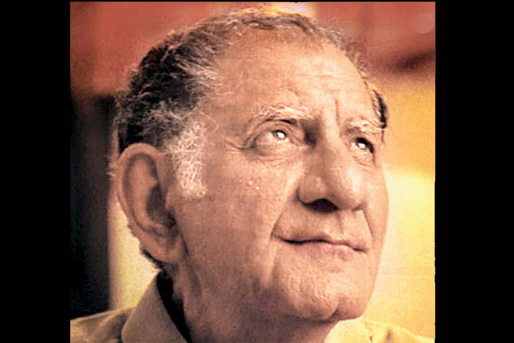

Anand Bakshi-The man behind Mere Khwaboo Me Jo Aaye
Anand Bakshi was one of the greatest and popular lyricists of his time. Having written for 400 songs and a career that spanned forty year, Anand Bakshi was one of the most successful lyricist of the Hindi Music Industry.
Anand Bakshi gave many hits with top composers like Laxmikant-Pyarelal and R. D. Burman.
Whether its superstar Raj Kapoor, producer Yash Chopra or director Subhash Ghai, Bakshi worked with every big name in the industry.
He worked in Raj Kapoors films like Bobby and Satyam Shivam Sundaram.
With the musical director Subhash Ghai he gave hit songs with the films like Hero, Karz, Saudagar, Ram Lakhan, Karma, Yaadein, Khalnayak and Taal.
While with the romantic and colorful producer Yash Chopra he gave hits with the films Dil To Pagal Hai, Chandani, Darr, and Lamhe to name a few.